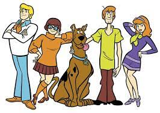

Veja algumas animações que marcaram
Scooby-Doo

Constituído por um grupo de quatro pessoas metidas a detetives Fred, Velma, Daphne e Salsicha,
com um Dogue Alemão falante chamado Scooby-Doo, que viajam numa van chamada Máquina Mistério, e
ajudam a investigar casos misteriosos. Visitam lugares inóspitos, casas mal-assombradas, parques
abandonados, pântanos e ilhas, a maioria das vezes ameaçados por monstros, zumbis, vilões, mas
considerando os episódios, são a maioria das vezes chamados de "fantasmas", mesmo não sendo.
Os Simpsons

Uma animação sobre uma típica família de classe média americana. Homer é o pai nada saudável ou
inteligente, que adora beber cerveja. Marge é a esposa e mãe dedicada. Bart é o filho de 10 anos,
que não leva a escola a sério e tem orgulho disso. Lisa é a garota de oito anos, um gênio não
apreciado. E Maggie é o bebê que não larga a chupeta.
Looney Tunes

Looney Tunes tornou-se uma franquia mundial de mídia, gerando várias séries de televisão,
histórias em quadrinhos, filmes, álbuns de música, jogos eletrônicos, atrações de parques de
diversões além de ser a principal franquia da Warner Bros. Muitos dos personagens fizeram e
continuam fazendo aparições especiais em vários outros programas de televisão, filmes e anúncios.
O personagem mais famoso de Looney Tunes, Pernalonga (Bugs Bunny), é considerado um ícone cultural
e possui até uma estrela própria na Calçada da Fama de Hollywood. Diversos filmes de Looney
Tunes/Merrie Melodies estão classificados entre os maiores desenhos animados de todos os tempos e
cinco já foram premiados ao Oscar.
Pica-Pau

Lantz produziu os curta-metragens do Pica-Pau até 1972, quando fechou definitivamente seu
estúdio. Desde então, o personagem só voltou a reaparecer em 1999, no programa The New Woody
Woodpecker Show, produzido pela Universal Animation Studios de 1999 a 2002. O Pica-Pau é um
dos poucos personagens de desenho animado que possui uma estrela na Calçada da Fama. Ele
também fez uma pequena aparição junto com outros personagens famosos no filme Who Framed
Roger Rabbit, de 1988.
Hora de Aventura

A série é baseada numa curta produzida para o Random! Cartoons, um programa incubador de séries
animadas da Nicktoons e da Frederator Studios. Depois do curta se tornar um viral na Internet, o
Cartoon Network selecionou-o para uma série completa, que estreou oficialmente em 5 de abril de
2010. A série, que é grandemente inspirada pelo RPG de fantasia Dungeons & Dragons assim como pelos
jogos eletrônicos em geral, é produzida via animação desenhada à mão. Os episódios são
desenvolvidos através do processo de storyboard, e um único episódio demora aproximadamente
entre oito a nove meses para ser terminado, apesar de vários episódios serem feitos simultaneamente.
Os membros do elenco de Adventure Time gravam as suas falas em conjunto em sessões grupais, ao
contrário da técnica tradicional com sessões diferentes para cada dublador. A série também
frequentemente emprega atores convidados para personagens menores.
Tom e Jerry

O centro da trama se baseia geralmente em tentativas frustradas de Tom tentando capturar Jerry,
com o caos e a destruição que ainda se seguem. Tom raramente consegue capturar Jerry,
principalmente por causa das habilidades do engenhoso ratinho, e também por causa de sua
própria estupidez. As perseguições eram eletrizantes e sempre vinham acompanhadas por uma boa
trilha sonora. Também eram utilizadas diversas armadilhas e truques que no final não davam
resultado satisfatório, como bombas e ratoeiras, coisas que eram fundamentais na rivalidade
entre o gato e o rato. Alguns personagens também marcam presença na trama, como o bulldog Spike
e o rival de Tom, o gato Butch.
Padrinhos Mágicos

Timmy Turner é um garoto de 10 anos que vive na cidade de Dimmsdale. É maltratado pela sua babá,
Vicky, e quando tenta contar para seus pais, eles não acreditam. Mas um dia o garoto recebe a visita
de duas fadas chamadas Cosmo e Wanda, que realizam qualquer desejo, exceto os que violam o livro de
regras. Cosmo é atrapalhado e palhaço, enquanto Wanda sempre avisa quando algo pode dar errado. Com
o tempo Timmy faz diferentes amigos, tanto na terra como no mundo das fadas. Mais tarde ele recebe
seu irmão-fada, Poof que é o único bebê do mundo das fadas.